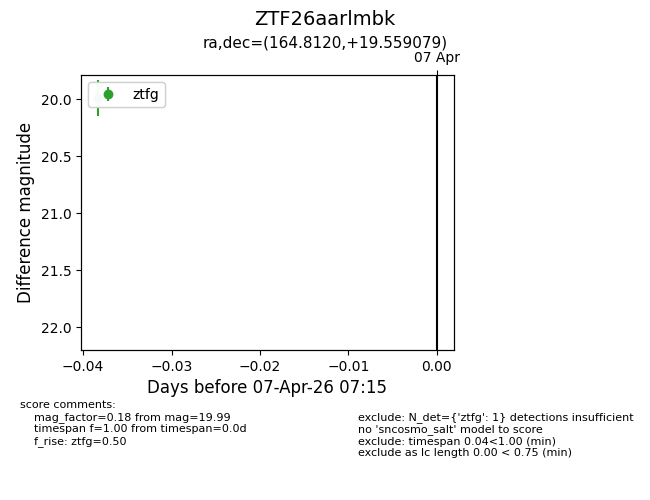
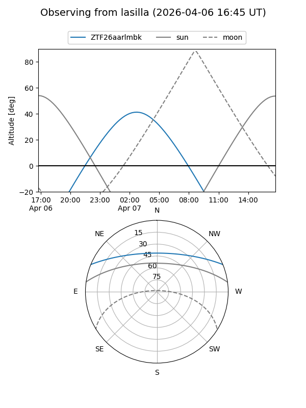
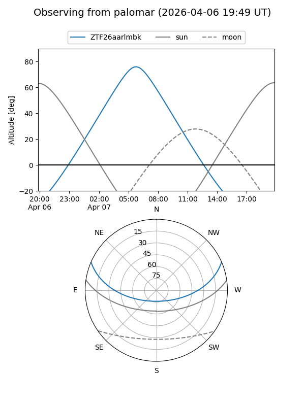
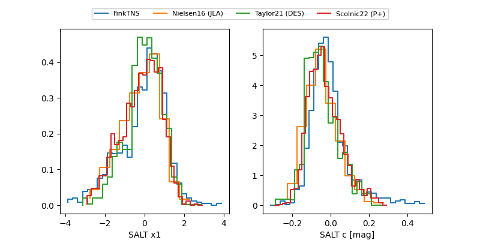

ZTF26aarlmbk
Target ZTF26aarlmbk at 2026-04-07 07:19
Aliases and brokers:
FINK: link
Lasair: link
ALeRCE: link
alt names
ZTF26aarlmbk (ztf,fink_ztf)
Coordinates:
equatorial (ra, dec) = 164.8120,+19.55908
equatorial (HMS+DMS) = 10:59:14.87,+19:33:32.68
galactic (l, b) = (223.3248,+63.22670)
Flags:
Photometry:
last ztfg=19.99
1 ztfg detections
Lightcurve

Visibility


Additional plots
